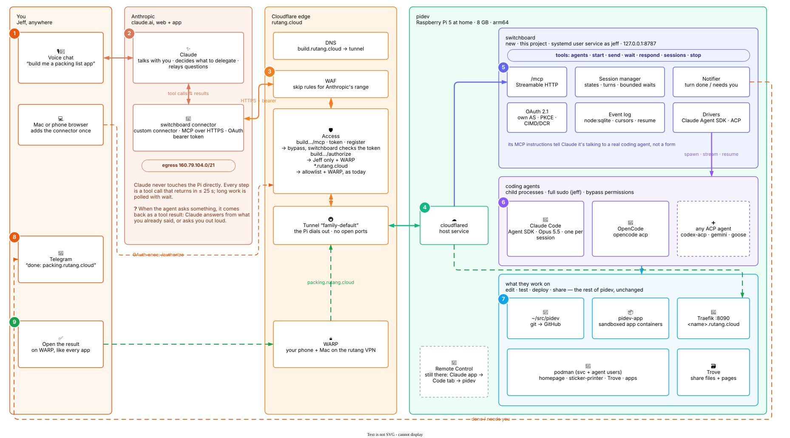
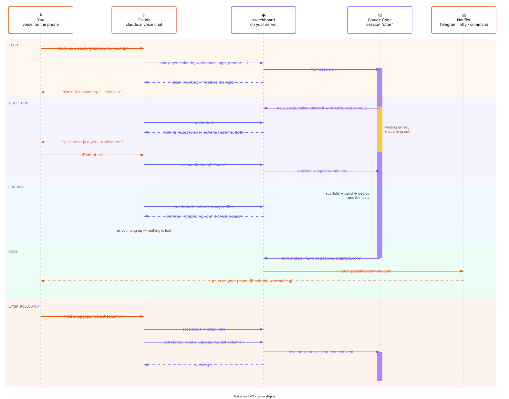
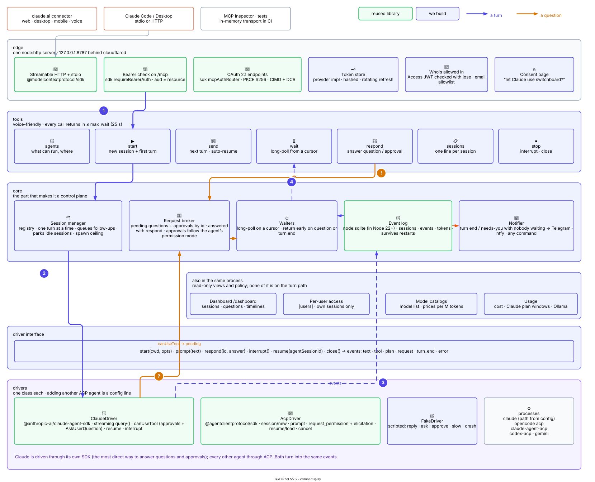
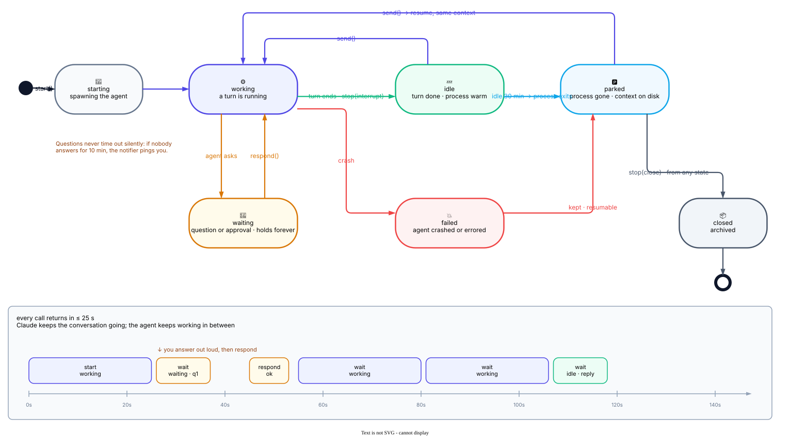
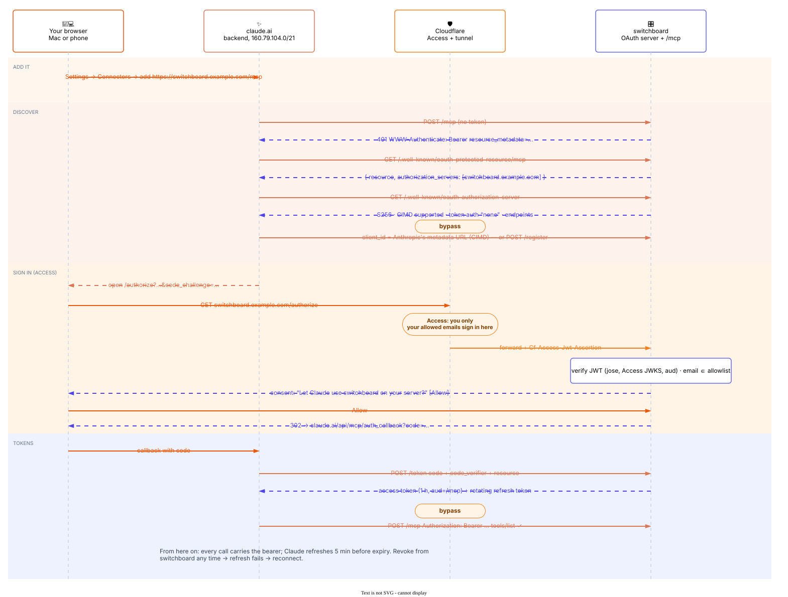
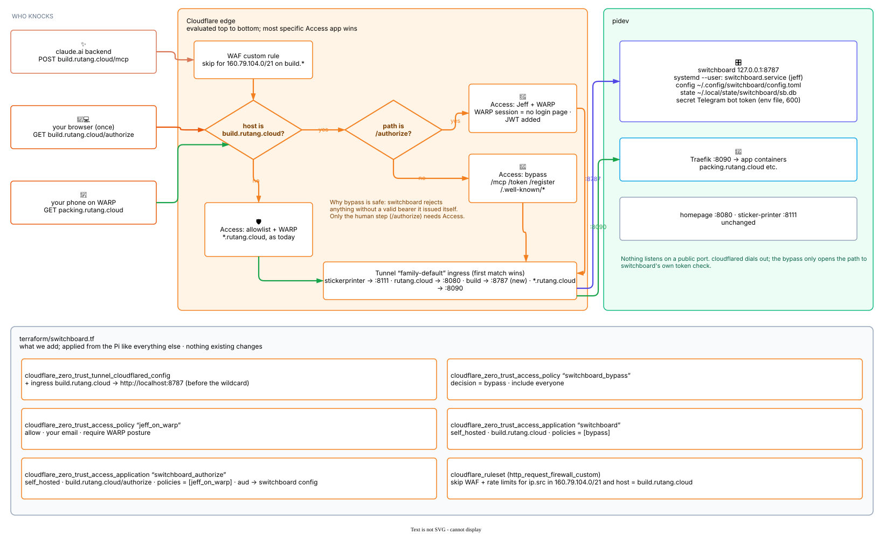
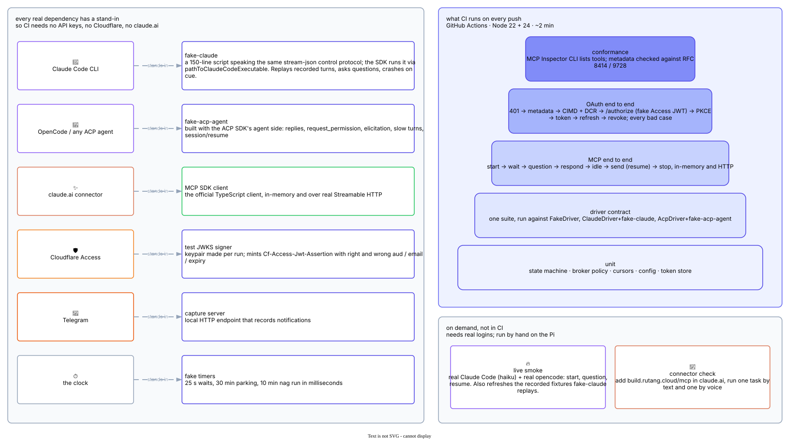

The whole system
Follow the numbers. Claude never touches your server directly: every step is a short tool call through Cloudflare to switchboard, which drives the agent.

A conversation
The agent can ask; Claude answers from what you already said, or asks you out loud. Hang up mid-build and nothing is lost: a notification (Telegram, ntfy or a command) pings you when it's done.

Inside switchboard
Green is reused, indigo is ours. Two drivers behind one small interface: Claude through its own Agent SDK (the cleanest way to answer its questions and approvals), everything else through ACP.

Tools & config
Seven tools, named for how you'd say them. Every call returns within max_wait; anything longer is picked up with wait.
| Tool | Takes | Returns |
|---|---|---|
agents | — | agents, models, workspaces |
start | prompt, agent?, workspace?, model? | session name (“otter”), state, reply or question, cursor |
send | session, message | same; resumes a parked session |
wait | session, cursor?, seconds ≤ 25 | what it's doing now, question, or final reply |
respond | session, request, answer | state (agent continues) |
sessions | state? | one line each: name, agent, state, last activity |
refresh | session? | state (idle); restarts the agent, keeps the conversation |
stop | session, interrupt | close | state |
The server's MCP instructions tell Claude: this is a live coding agent; relay its questions, answer only what you already know, keep the user posted in a sentence, and say when they'll get a ping.
# ~/.config/switchboard/config.toml listen = "127.0.0.1:8787" public_url = "https://switchboard.example.com" max_wait = "25s" [agents.claude] driver = "claude" executable = "~/.local/bin/claude" model = "opus" # or sonnet, haiku permission_mode = "bypassPermissions" [agents.opencode] driver = "acp" command = ["opencode", "acp"] [workspaces] site = "~/src/my-site" [auth] # off for stdio login = "cloudflare-access" team = "your-team" aud = "…" # terraform output allow = ["you@example.com"] [notify] telegram = { token_env = "TELEGRAM_BOT_TOKEN", chat = "…" } nag_after = "10m" # unanswered question
Dashboard, models, usage and people
Beyond the core tools, the same process serves a read-only dashboard and can share one install between several people.
Dashboard
/dashboard is a phone-friendly, no-build page: live counts, sessions by state with their pending questions, per-session event timelines, the MCP contract clients see, and connected clients. It sits behind the same Access application as /authorize.
Model catalogs
An agent can list the models it offers, with optional prices per million tokens. The agents tool shows them, and start({ model }) must pick one, so the client can weigh cost against difficulty.
Usage
Per-session cost and tokens from the drivers, Claude plan windows (5-hour, 7-day) from rate-limit events, and an optional Ollama usage poller. The agents tool ends with a one-line hint so the client can steer toward a cheaper agent.
Multiple people
List a person under [users] to limit which agents and workspaces they see, and to hide everyone else's sessions. A run_as agent runs as another Unix user, so a guest's agent has that user's files, credentials and permissions, not yours.
Session lifecycle
“Waiting” is a first-class state that holds until someone answers. Idle sessions park (process exits, context stays on disk) and resume on the next send.

Auth & Cloudflare
switchboard is its own OAuth 2.1 server, the full flow claude.ai expects. Cloudflare Access guards only the one human step, so claude.ai's servers never hit a login page. (Cloudflare's built-in MCP OAuth fails with claude.ai today, so we don't use it.)


Testing without secrets
Every outside dependency has a stand-in, so CI runs the full flows (questions, resume, OAuth) with no keys. Real agents and the real connector are checked by hand on a real server.

Prior art
Nothing out there does the important part (answering an agent's questions remotely), but plenty to learn from.
Xirp · Spotify
Vendor-neutral desktop app for Claude Code, Codex, Gemini. A git worktree per task and one status view for every session.
Honk · Spotify
Runs the Agent SDK inside their own harness instead of scraping a terminal. Same move here.
Agent Client Protocol
Zed's standard for driving agents: sessions, prompts, permission requests, questions, resume. Our generic driver.
claude-code-rc-mcp
Claude connector over tmux + transcripts. Good: capped waits, server-chosen session ids. Can't answer questions.
claude-sessions-mcp
Drives the Remote Control bridge's undocumented API with your claude.ai token. Nice cursors; too fragile to build on.
Omnara · Happy
Phone-first agent control. Borrow per-tool allow / ask / block rules and outbound-only connectivity.
Unknowns & plan
Settle the risky bits first, with a stub server, before building the rest.
Voice + custom connectors
Voice mode can use tools, but there's an open report of custom connector tools failing in voice only. Test day one; notifications cover “done” either way.
Real tool-call timeout
Docs say 240 s; some report 30–60 s. Default max_wait 25 s, configurable.
Access precedence
An exact-host bypass app should beat the *.example.com wildcard. Check with curl from outside your network right after apply.
OpenCode event shapes
How its questions surface over ACP is unprobed. A short spike before the ACP driver.
- Core over stdiotools, session manager, FakeDriver; usable from Claude Code on the Mac
- ClaudeDriverAgent SDK, questions and approvals, resume; fake-claude + live smoke
- HTTP + OAuthown AS, CIMD/DCR, Access JWT login, token tests
- On your serversystemd, Terraform, notifications; connect from claude.ai, try voice
- AcpDriverOpenCode first, then Codex and Gemini by config
- Polishworktree per session, per-tool rules, “open in Claude app” link